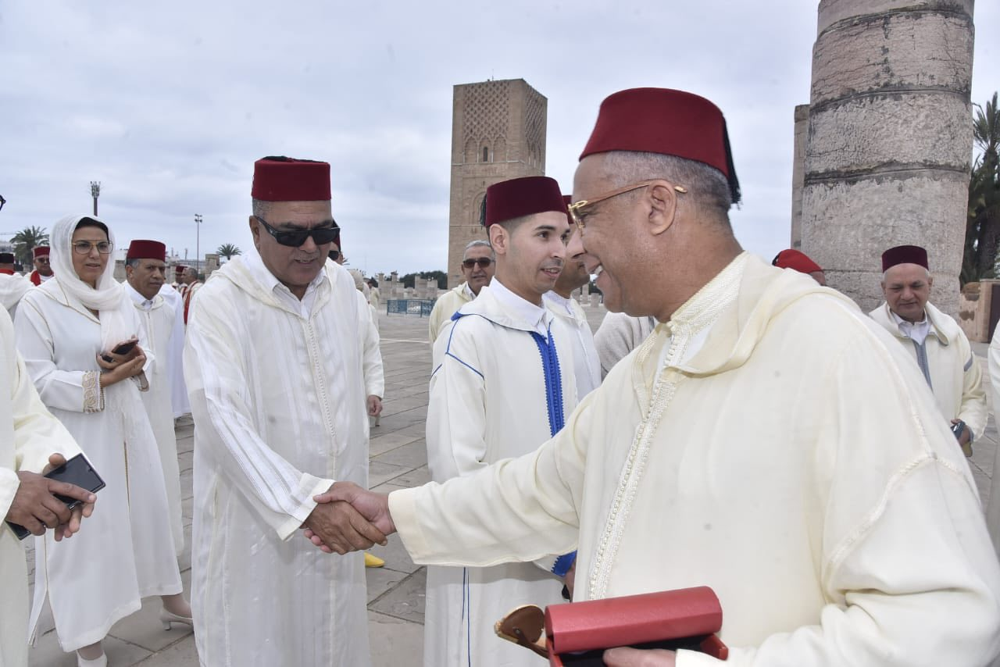
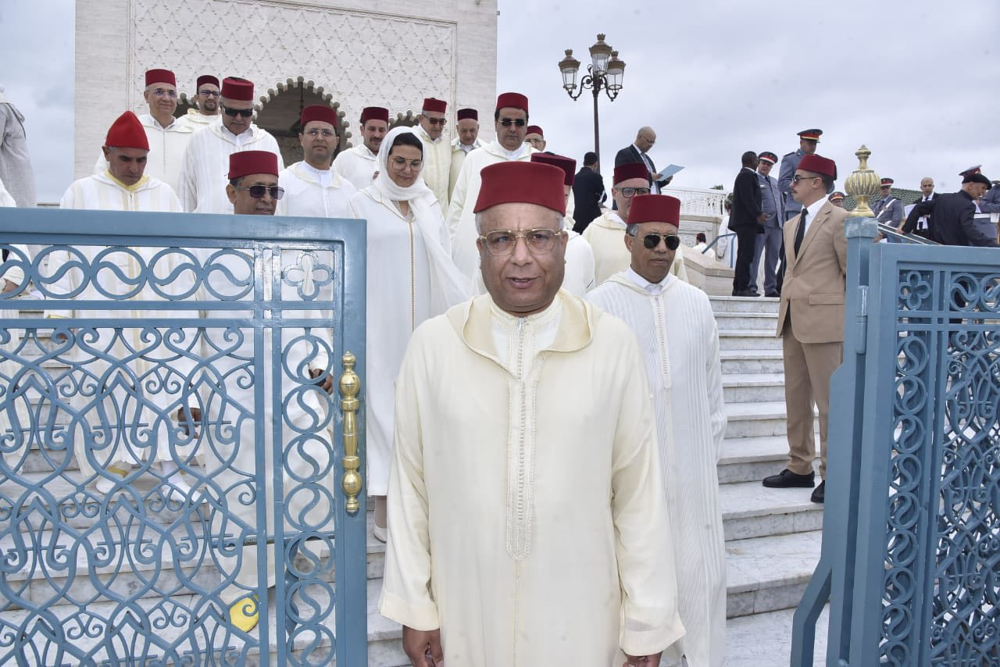
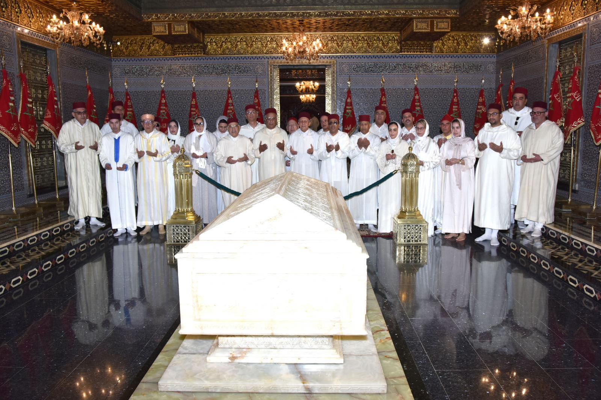
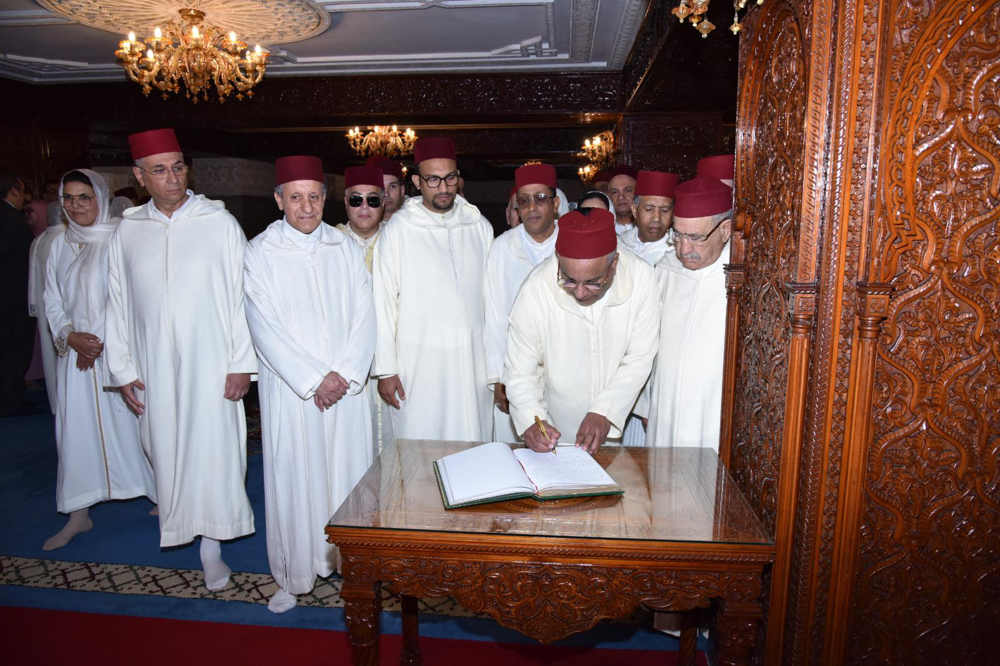

وفد من حزب جبهة القوى الديمقراطية يستحضر دلالات عاشر رمضان في زيارة لضريح محمد الخامس




قام وفد من حزب جبهة القوى الديمقراطية، يتقدمه الأمين العام الأخ المصطفى بنعلي، صباح عاشر رمضان، بزيارة إلى ضريح محمد الخامس، ترحماً على روح بطل التحرير وأب الأمة جلالة الملك محمد الخامس، واستحضاراً لرمزية هذه المحطة في تجديد التعاقد الوطني بين العرش والشعب.
وقام الوفد بالترحم كذلك على روح رفيقه في الكفاح وباني المغرب الحديث، جلالة الملك الحسن الثاني، تأكيداً على استمرارية المشروع الوطني الذي تأسس على معادلة الاستقلال والوحدة وبناء الدولة.
وأكد الوفد أن إحياء ذكرى عاشر رمضان هو فعل سياسي يعبر عن التشبث بثوابت الأمة، وفي مقدمتها السيادة الوطنية، وصيانة كرامة المواطن، وترسيخ دولة المؤسسات والاختيار الديمقراطي.
وشدد الأمين العام للحزب في تصريحات بالمناسبة على أن استلهام دلالات هذه الذكرى المرتبطة بالانتقال من الجهاد الأصغر إلى الجهاد الأكبر، يقتضي اليوم مضاعفة الجهد في معركة البناء الديمقراطي والتنموي، وتعزيز الثقة في العمل السياسي المسؤول، في أفق توطيد العدالة الاجتماعية والمجالية، تحت القيادة الرشيدة لجلالة الملك محمد السادس حفظه الله.